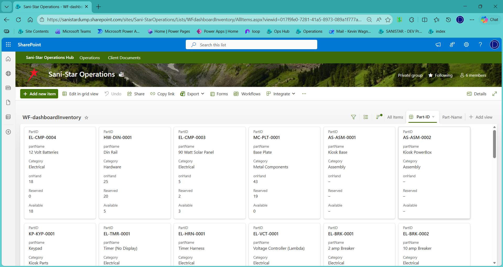

Inventory
Results of:
- Sales Orders
- Manual Trigger
Initiate
- Demand on Inventory - Affects available stock
- Control the conversion of reserved stock to consumed
- If you cancel a Build Order mid-process, the parts it has reserved are returned via replenishment

Live Inventory Dashboard
The inventory system displays only live, real‑time status. It continuously evaluates incoming replenishments, consumption from service tickets and product builds, and near‑term sales order demand. From this, it calculates three key values: On Hand, the physical quantity currently on site; Available, the quantity that can be used without impacting in‑progress work; and Reserved, the quantity already committed to active services or builds. Beyond these live counts, the system also projects when new part orders will be required and identifies trends or patterns that may indicate issues on the line, such as faulty batches of consumed parts.

Production Build Dashboard
To find out what activity is generating these metrics, just click and they will be brought up for you.

Product Decompose
The system tracks parts consumption and knows exactly what components are needed for each build.
It uses a file called a BOM (Bill of Materials) to define the relationships.
When a sales order is submitted, it decomposes the products to a schedule of parts that are kept in inventory.
If there is not sufficient inventory, a deficiency will be sent to Greg. You can also see deficiencies on the dashboard.

Deficiency Email
In this email you can see that 10 S-CONDUIT must be ordered to fulfill this sale.